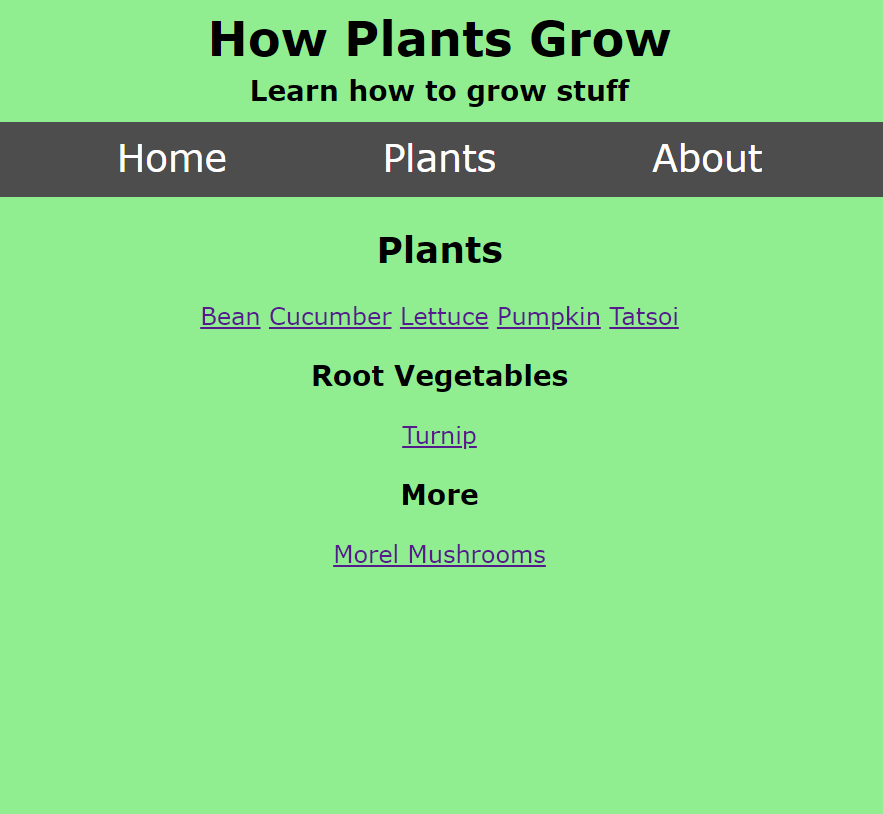
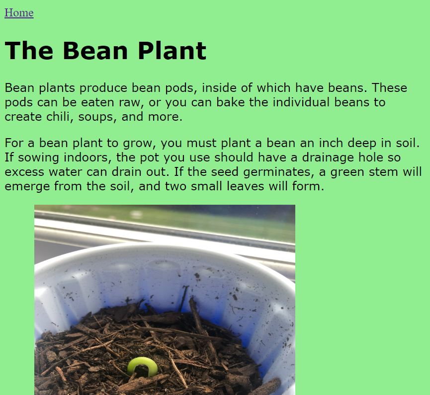

My Projects
2022-2023
I've created lots of websites this spring, but only a few of them are good for their purpose. Honestly, I'd say this website has been my best project so far. But I'll show you two of my other ones, including:
- How Plants Grow
- Clicker Game
First, How Plants Grow. This was the first "real" website I made. I started making it this spring when I started learning to code. I'm not a botanist, and this wouldn't be the theme I would go for if I really wanted to make a good website, but I needed something to base it off on, so I chose plants.
In How Plants Grow, all I did was made an HTML document for the plant of my choosing, and then I would write about it.
It's a pretty basic website, so looking back on it, I'm not very proud of it. But it is special because it was my first project with a functional navigation bar.